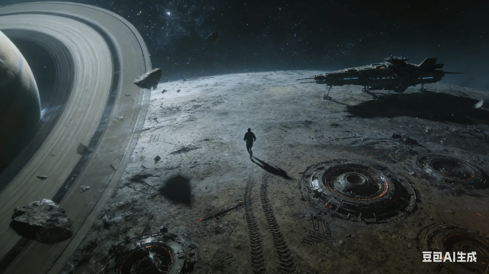

我的Knife
我的奈武，我的奈武，我的奈武！这绝望的回响湮没在了无边的寂静里。 我无法停止脚下的步子，无法停止在欺骗自己，心在滴血。我愿意相信等再次醒来，你将会站在这里，正要和我一起在这个刚着陆的星球上…

我的奈武，我的奈武，我的奈武！这绝望的回响湮没在了无边的寂静里。 我无法停止脚下的步子，无法停止在欺骗自己，心在滴血。我愿意相信等再次醒来，你将会站在这里，正要和我一起在这个刚着陆的星球上跑跑步。 你会回来的，你会回来的！
看着兰德与奈武的厮杀，而奈武始终无法近身攻击，仅仅几个眨眼间，败局已定。就在受到兰德的最后一击后，奈武连魂魄都濒临了溃散。 然而，就在兰德逼近我眼前的一刹那，奈武爆发出磅礴的力量闪现到兰德身后，以一个轻如叹息的拥抱，分离了他的头颅。我惊魂未定站立在原处。
现在，这颗星球，静得令人窒息。
这原本只是一场始于严苛选拔的星际探险。我们从无数竞争者中最终脱颖而出，组成了小队——兰德、奈武、红，以及我。 在他们眼中，我大概符合某种对东方的遥远想象：乌黑垂顺的头发与平静朴素的黄色面孔。他们常接近于笃定地说，我藏着深不可测的中国功夫或是古老巫术。 天知道，我唯一的‘巫术’大概就是在危急关头，总会有人毫不犹豫地挡在伤害前面。 我曾将这一切归结于自己过于弱小与他人的善良，却忽略了在这资源紧缺的星体上，利益往往比善意更有力量。弱肉强食与临时结盟，才是黑暗森林里真正的法则。 何况他们可不是像我这样单纯的探险者。 奈武，人如其名，他像knife一样，是一台温柔的切割机器。他的技能是在拥抱状态下使用意念力悄无声息拿掉敌人的头颅。 公爵之子兰德则复杂得多，他的身体里住着两个灵魂，这是他的秘密。兰德与兰瑟——他的随身侍者，本是两个独立的个体。 直到幼年那次滑雪，在陡坡上疾坠的兰德恐惧至极，远处的兰瑟竟以魂魄之姿冲入他体内，接管了那具失控的身体。 兰德从此变得鲁莽而疯狂，兰瑟则成了他身边冷静的守护者。一开始兰瑟只是出离自身并与兰德连接，但是一次事故后，兰瑟不惜以永恒的共生为代价默默守护着兰德。 这个秘密一直无人知晓，直到红在跟兰德约会之后察觉到了异常。她是一位曾登顶星球拳榜的格斗家，优雅与力量在她身上浑然一体。 是她最先看出兰德身体里藏着另一个人，也是她，将我一同拉入了这场危险之中。
星际探险的机会来之不易，我对一切都抱着孩子式的好奇。我惊讶于自己竟能熟练驾驶星际舰车，并懂得设置安全系数，以规避那些隐匿于黑暗中的死亡星体—— 它们熄灭后便与宇宙融为一体，成为无法被雷达完全识别的“暗影”。我不想死，更不愿任何一位同伴因我而死。 星际浩大，我们的行进如同静止一般，实则是已经超越了光速的极限。 终于，穿过漫长的漆黑，最终到了第一个目标探险点。星舰稳稳停靠在眼前这个星球上，我们开始布置科考装置与小小的庆祝会。 庆祝进行中，本来气氛和谐融洽，可变故来得毫无征兆。当我回过神来时，已在这颗完全陌生的星球上狂奔逃命。 兰德在后面紧追不舍。我一边跑，一边感到某种荒诞：“还能这样？！”眼前的一切都在颠覆我的认知。 这里的空间结构极不稳定，我跌入一团如脏旧窗影般的暗影，便能瞬间完成一次无法预测的短距跃迁。谢天谢地，每次落地时我的身体还算完整—— 我最怕睁开眼看到自己支离破碎的样子。 这种穿梭令人恐惧。总觉得某一次，这扭曲的空间会永久改变我的形态，让我变得畸形、怪异。若非逃命，我绝不会靠近这些“影子”半步。 但渐渐地，我意识到：似乎只有我能穿越它们。在兰德看来，我只是屡次诡异地消失，又在他意想不到的角落现身。而他每一次看见我，都毫不犹豫地再次追来。 又一次穿梭后，我落进一间空荡的舱室。惊魂未定，我必须立刻藏起来——兰德太聪明了，他很快会找到这里，然后杀了我。我对此毫不怀疑。 可为什么？明明初识时他还算友好，为何突然非要置我于死地？就因为那个秘密？可红也知道……红呢？她此刻在哪里？
就在奈武死后，我从梦中惊醒。睁开眼还是同梦里一样的黑暗寂静，只有心脏在胸腔里沉重地擂击声，好一阵子我才能够分得清哪个我才是真实。 我开始回想，但不再记得梦的全貌，只能捡拾一些仍在闪烁的碎片：
- 兰德的母亲：一位温柔有耐心，但骨子里十分偏执的英国老派公爵夫人。她对兰德有着远超寻常的期许与控制欲，似乎有点厌恶兰瑟。
- 四人的任务：这次星际探险并非单纯的拓荒。四位被选中的探险者，每个人都背负着一项绝密而特殊的个人任务，它们彼此关联，又可能互相冲突。
- 选拔之地：探险者的最终选拔，在一个看似普通的郊区小镇外进行。那里有一片被严格封锁的、异常空旷的土地，平静下是贵族的权威感。
- 红：她是队伍中最耀眼的存在。一袭利落短发，气质融合了《赛博朋克：边缘行者》中露西的冷冽不羁与《猫眼三姐妹》大姐来生泪致命的妩媚。她热情、神秘，仿佛本身就是一团等待被解读的谜题。